9. Pairwise prediction#
Part of the Fig. 1 chapter — see it for the panel-by-panel map. The first code cell sets ENTEX_ROOT and activates the no-overwrite guard (see the Reproduction guide). Outputs shown are the author’s original run.
📥 Required input files#
This notebook reads the following files (paths resolve from ENTEX_ROOT/REF_ROOT; the setup cell sets them). See the chapter’s inputs.md for RAW-vs-derived tags.
f'{indir}npc.tsv'· metadataf'{indir}5kCG100k3C_summary.h5ad'· joint summary objf'{indir}L2/{ct}/5kCG100k3C_embed.h5ad'· embedding h5adf'{outdir}{ct}_mergeany_rocpr.npy'· otherf'{outdir}{ct}_{mode}.npz'· otherf'{outdir}{ct}_mergeany.npy'· otherf'{indir}L2/{ct}/5kCG_embed.h5ad'· embedding h5adf'{indir}L2/{ct}/100k3C_embed.h5ad'· embedding h5adf'{outdir}{ct}_mergeboth_rocpr80.npy'· otherf'{outdir}{ct}_mergemc_rocpr.npy'· otherf'{outdir}{ct}_merge3c_rocpr.npy'· otherf'{ENTEX_ROOT}/allclist.tsv'· sc/pseudobulk mC (allc)f'{indir}merged_allc/allclist_L2any.txt'· sc/pseudobulk mC (allc)f'{indir}merged_cool_impute/coollist_L2any.txt'· otherf'{indir}L2_hiconly/{ct}/100k3C_embed.h5ad'· embedding h5adf'{indir}L2_hiconly/{ct}/mergehic_rocpr.npy'· other
# === Reproduction setup — edit ENTEX_ROOT / REF_ROOT for your machine ===
import os, sys
ENTEX_ROOT = os.environ.get('ENTEX_ROOT', '/large_storage/zhoulab/zhoujt/project/ENTEx')
REF_ROOT = os.environ.get('REF_ROOT', '/large_storage/zhoulab/ref')
BOOK_ROOT = os.environ.get('BOOK_ROOT', f'{ENTEX_ROOT}/analysis/HumanCellEpigenomeAtlas')
sys.path.insert(0, BOOK_ROOT)
os.chdir(f'{ENTEX_ROOT}/analysis') # original working directory
import repro_guard # no-overwrite guard (default: skip existing)
import numpy as np
import pandas as pd
import seaborn as sns
import matplotlib as mpl
import matplotlib.pyplot as plt
from glob import glob
import anndata
import scanpy as sc
import scanpy.external as sce
from sklearn.preprocessing import normalize
from sklearn.model_selection import cross_val_score
from sklearn.linear_model import LogisticRegression
from sklearn.model_selection import StratifiedKFold
from sklearn.metrics import roc_auc_score, average_precision_score
from ALLCools.clustering import *
from ALLCools.plot import *
from ALLCools.integration.seurat_class import SeuratIntegration
mpl.style.use('default')
mpl.rcParams['pdf.fonttype'] = 42
mpl.rcParams['ps.fonttype'] = 42
mpl.rcParams['font.family'] = 'sans-serif'
mpl.rcParams['font.sans-serif'] = 'Helvetica'
import warnings
warnings.filterwarnings("ignore")
def dump_embedding(adata, name, n_dim=2):
# put manifold coordinates into adata.obs
for i in range(n_dim):
adata.obs[f'{name}_{i}'] = adata.obsm[f'X_{name}'][:, i]
return adata
indir = f'{ENTEX_ROOT}/clustering/merged/'
outdir = f'{ENTEX_ROOT}/analysis/pairwise_prediction/'
L1_list = np.sort([xx.split('/')[-2] for xx in glob(f'{indir}L2/*/5kCG100k3C_embed.h5ad')])
print(len(L1_list))
35
npc = pd.read_csv(f'{indir}npc.tsv', sep='\t', header=None, index_col=0, names=['npc_cg', 'npc_3c'])
npc
| npc_cg | npc_3c | |
|---|---|---|
| Endo-Lym | 9 | 13 |
| Endo-Ves | 28 | 11 |
| Epi-Aci | 5 | 8 |
| Epi-AdrCtx | 11 | 5 |
| Epi-Alv | 20 | 8 |
| Epi-BrstBasal | 12 | 4 |
| Epi-Duc | 4 | 7 |
| Epi-Endcri | 15 | 10 |
| Epi-Ent | 5 | 10 |
| Epi-Gas | 5 | 9 |
| Epi-Krt_Lum | 10 | 10 |
| Epi-TPB | 14 | 8 |
| Fibro-Adr | 10 | 16 |
| Fibro-Brst | 10 | 11 |
| Fibro-EndN | 20 | 6 |
| Fibro-EpiN | 17 | 15 |
| Fibro-GI | 24 | 7 |
| Fibro-HT | 16 | 7 |
| Fibro-Mus | 11 | 12 |
| Fibro-Myo | 8 | 6 |
| Fibro-Sk | 26 | 20 |
| Glia-Astro | 10 | 5 |
| Glia-Oligo | 10 | 8 |
| Hema-B | 6 | 8 |
| Hema-Mast | 13 | 14 |
| Hema-Myeloid | 15 | 15 |
| Hema-NK | 15 | 12 |
| Hema-Tmem | 15 | 10 |
| Hema-Tnaive | 5 | 6 |
| Mus-Crd | 5 | 6 |
| Mus-Skl | 7 | 10 |
| Neu-Exc | 18 | 9 |
| Neu-Inh | 29 | 11 |
| Neu-Schw | 9 | 10 |
| SmMus_Peri | 20 | 11 |
meta = anndata.read_h5ad(f'{indir}5kCG100k3C_summary.h5ad').obs
ct = 'Fibro-Sk'
adata = anndata.read_h5ad(f'{indir}L2/{ct}/5kCG100k3C_embed.h5ad')
npc_cg, npc_3c = npc.loc[ct].values
data_cg = normalize(adata.obsm[f'5kCG100k3C_u{npc_cg}pc{npc_3c}'][:, :npc_cg], axis=1)
data_3c = normalize(adata.obsm[f'5kCG100k3C_u{npc_cg}pc{npc_3c}'][:, -npc_3c:], axis=1)
clf = LogisticRegression(class_weight='balanced')
skf = StratifiedKFold(n_splits=3, shuffle=True)
# label = adata.obs['leiden_init']
label = np.load(f'{outdir}{ct}_mergeany_rocpr.npy', allow_pickle=True)
label = pd.Series(label, index=adata.obs.index, name='L2_any', dtype='category')
leg = np.sort(label.unique())
while len(leg)>1:
count = label.astype(str).value_counts()
score = np.zeros((2, 2, len(leg), len(leg)))
for k,data in enumerate([data_cg, data_3c]):
for i in np.arange(len(leg)-1):
for j in np.arange(i+1, len(leg)):
selc = label.isin([leg[i], leg[j]])
if count.loc[leg[i]]<count.loc[leg[j]]:
label_dict = {leg[i]:1, leg[j]:0}
else:
label_dict = {leg[i]:0, leg[j]:1}
# selc = np.random.permutation(np.where(selc)[0])
X = data[selc]
y = label.values[selc].map(label_dict)
pred = np.zeros(len(y))
for train_index, test_index in skf.split(X, y):
X_train, X_test, y_train, y_test = X[train_index], X[test_index], y[train_index], y[test_index]
pred[test_index] = clf.fit(X_train, y_train).predict_proba(X_test)[:,1]
score[0,k,i,j] = roc_auc_score(y, pred)
score[1,k,i,j] = average_precision_score(y, pred)
score = np.min(np.min(score, axis=0), axis=0)
min_score = np.min(score[np.triu_indices(len(leg), k=1)])
if min_score>0.9:
break
else:
xx,yy = np.where(score==min_score)
xx, yy = leg[xx[0]], leg[yy[0]]
# print(f'Merge {xx} {yy}')
label[label==xx] = yy
leg = np.sort(label.unique())
count = label.astype(str).value_counts()
labelmap = count.reset_index().reset_index().set_index('L2_any')['index'].to_dict()
count.reset_index().reset_index()
| index | L2_any | count | |
|---|---|---|---|
| 0 | 0 | c6 | 1256 |
| 1 | 1 | c4 | 131 |
count = label.astype(str).value_counts()
labelmap = count.reset_index().reset_index().set_index('leiden_init')['index'].to_dict()
count.reset_index().reset_index()
| index | leiden_init | count | |
|---|---|---|---|
| 0 | 0 | c7 | 403 |
| 1 | 1 | c8 | 348 |
| 2 | 2 | c0 | 297 |
| 3 | 3 | c2 | 208 |
| 4 | 4 | c3 | 131 |
np.std(data_3c, axis=0)
array([0.09605348, 0.47259112, 0.30345154, 0.32962059, 0.19431019,
0.17647271, 0.17459848, 0.18282639, 0.1507238 ])
np.std(data_cg, axis=0)
array([0.13034041, 0.40010762, 0.0911094 , 0.20814971, 0.10646034])
np.max(data, axis=0)
array([[0. , 1. , 0.99972944, 0.99837662, 0.98564214],
[0. , 0. , 0.99698209, 0.99863036, 1. ],
[0. , 0. , 0. , 0.96785201, 0.94861111],
[0. , 0. , 0. , 0. , 0.94549808],
[0. , 0. , 0. , 0. , 0. ]])
# fig = plt.figure(figsize=(12,3*len(L1_list)), constrained_layout=True, dpi=300)
# subfigs = fig.subfigures(len(L1_list), 1)
# for ct,subfig in zip(L1_list, subfigs):
# data = []
# for mode in ['CG', '3C']:
# score = np.load(f'{outdir}{ct}_{mode}.npz', allow_pickle=True)['score']
# leg = np.load(f'{outdir}{ct}_{mode}.npz', allow_pickle=True)['leg']
# data.append(score)
# datamax = np.max(data, axis=0)
# datamin = np.min(data, axis=0)
# subfig.suptitle(ct, fontsize=15)
# axes = subfig.subplots(1, 4)
# for ax,tmp in zip(axes, data + [datamax, datamin]):
# tmp = (tmp+tmp.T)
# rorder = sns.clustermap(tmp, figsize=(0.1, 0.1)).dendrogram_row.reordered_ind
# ax.imshow(tmp[rorder][:, rorder], cmap='RdBu_r', vmin=0.8, vmax=1)
# ax.set_xticks(np.arange(tmp.shape[0]))
# ax.set_yticks(np.arange(tmp.shape[0]))
# ax.set_xticklabels(leg[rorder], rotation=90)
# ax.set_yticklabels(leg[rorder])
# fig.savefig('pairwise_roc_lr.pdf', transparent=True)
def merge_any(ct):
global indir, outdir
adata = anndata.read_h5ad(f'{indir}L2/{ct}/5kCG100k3C_embed.h5ad')
npc_cg, npc_3c = npc.loc[ct].values
data_cg = normalize(adata.obsm[f'5kCG100k3C_u{npc_cg}pc{npc_3c}'][:, :npc_cg], axis=1)
data_3c = normalize(adata.obsm[f'5kCG100k3C_u{npc_cg}pc{npc_3c}'][:, -npc_3c:], axis=1)
clf = LogisticRegression(class_weight='balanced')
skf = StratifiedKFold(n_splits=3, shuffle=True)
label = adata.obs['leiden_init']
leg = np.sort(label.unique())
while len(leg)>1:
count = label.astype(str).value_counts()
score = np.zeros((2, 2, len(leg), len(leg)))
for k,data in enumerate([data_cg, data_3c]):
for i in np.arange(len(leg)-1):
for j in np.arange(i+1, len(leg)):
selc = label.isin([leg[i], leg[j]])
if count.loc[leg[i]]<count.loc[leg[j]]:
label_dict = {leg[i]:1, leg[j]:0}
else:
label_dict = {leg[i]:0, leg[j]:1}
# selc = np.random.permutation(np.where(selc)[0])
X = data[selc]
y = label.values[selc].map(label_dict)
pred = np.zeros(len(y))
for train_index, test_index in skf.split(X, y):
X_train, X_test, y_train, y_test = X[train_index], X[test_index], y[train_index], y[test_index]
pred[test_index] = clf.fit(X_train, y_train).predict_proba(X_test)[:,1]
score[0,k,i,j] = roc_auc_score(y, pred)
score[1,k,i,j] = average_precision_score(y, pred)
score = np.max(np.min(score, axis=0), axis=0)
min_score = np.min(score[np.triu_indices(len(leg), k=1)])
if min_score>0.9:
break
else:
xx,yy = np.where(score==min_score)
xx, yy = leg[xx[0]], leg[yy[0]]
# print(f'Merge {xx} {yy}')
label[label==xx] = yy
leg = np.sort(label.unique())
count = label.astype(str).value_counts()
labelmap = count.reset_index().reset_index().set_index('leiden_init')['index'].to_dict()
label_reorder = label.map(labelmap).astype(int)
label_reorder = 'c' + label_reorder.astype(str)
np.save(f'{outdir}{ct}_mergeany_rocpr.npy', label_reorder)
return len(leg)
from concurrent.futures import ProcessPoolExecutor, as_completed
cpu = 20
with ProcessPoolExecutor(cpu) as executor:
futures = {}
for ct in L1_list:
future = executor.submit(
merge_3c,
ct=ct,
)
futures[future] = ct
result = {}
for future in as_completed(futures):
ct = futures[future]
result[ct] = future.result()
print(f'{ct} finished')
Endo-Lym finished
Fibro-Mus finished
Fibro-Myo finished
Epi-Duc finished
Fibro-Sk finished
Fibro-EpiN finished
Epi-Alv finished
Glia-Astro finished
Fibro-Adr finished
Hema-Mast finished
Hema-NK finished
Epi-Krt_Lum finished
Epi-BrstBasal finished
Epi-Aci finished
Epi-Endcri finished
Epi-Gas finished
Fibro-HT finished
Neu-Schw finished
Hema-B finished
Fibro-B finished
Mus-Skl finished
Epi-Ent finished
Glia-Oligo finished
Mus-Crd finished
SmMus_Peri finished
Hema-Tmem finished
Epi-TPB finished
Hema-Tnaive finished
Neu-Inh finished
Fibro-EndN finished
Endo-Ves finished
Neu-Exc finished
Fibro-GI finished
Hema-Myeloid finished
Epi-AdrCtx finished
def pairwise_score(ct):
global indir, outdir
adata = anndata.read_h5ad(f'{indir}L2/{ct}/5kCG100k3C_embed.h5ad')
npc_cg, npc_3c = npc.loc[ct].values
data_cg = normalize(adata.obsm[f'5kCG100k3C_u{npc_cg}pc{npc_3c}'][:, :npc_cg], axis=1)
data_3c = normalize(adata.obsm[f'5kCG100k3C_u{npc_cg}pc{npc_3c}'][:, -npc_3c:], axis=1)
# label = adata.obs['leiden_init']
label = np.load(f'{outdir}{ct}_mergeany_rocpr.npy', allow_pickle=True)
label = pd.Series(label, index=adata.obs.index, name='L2_any', dtype='category')
leg = np.sort(label.unique())
clf = LogisticRegression(class_weight='balanced')
skf = StratifiedKFold(n_splits=3, shuffle=True)
count = label.astype(str).value_counts()
for mode,data in zip(['CG','3C'], [data_cg, data_3c]):
score = np.zeros((2, len(leg), len(leg)))
for i in np.arange(len(leg)-1):
for j in np.arange(i+1, len(leg)):
selc = label.isin([leg[i], leg[j]])
if count.loc[leg[i]]<count.loc[leg[j]]:
label_dict = {leg[i]:1, leg[j]:0}
else:
label_dict = {leg[i]:0, leg[j]:1}
# selc = np.random.permutation(np.where(selc)[0])
X = data[selc]
y = label.values[selc].map(label_dict)
pred = np.zeros(len(y))
for train_index, test_index in skf.split(X, y):
X_train, X_test, y_train, y_test = X[train_index], X[test_index], y[train_index], y[test_index]
pred[test_index] = clf.fit(X_train, y_train).predict_proba(X_test)[:,1]
score[0,i,j] = roc_auc_score(y, pred)
score[1,i,j] = average_precision_score(y, pred)
# score[i,j] = np.mean(cross_val_score(clf, X, y, cv=3, scoring='roc_auc'))
np.savez(f'{outdir}{ct}_{mode}.npz', score=score, leg=leg)
for ct in L1_list:
pairwise_score(ct)
print(ct)
Endo-Lym
Endo-Ves
Epi-Aci
Epi-AdrCtx
Epi-Alv
Epi-BrstBasal
Epi-Duc
Epi-Endcri
Epi-Ent
Epi-Gas
Epi-Krt_Lum
Epi-TPB
Fibro-Adr
Fibro-B
Fibro-EndN
Fibro-EpiN
Fibro-GI
Fibro-HT
Fibro-Mus
Fibro-Myo
Fibro-Sk
Glia-Astro
Glia-Oligo
Hema-B
Hema-Mast
Hema-Myeloid
Hema-NK
Hema-Tmem
Hema-Tnaive
Mus-Crd
Mus-Skl
Neu-Exc
Neu-Inh
Neu-Schw
SmMus_Peri
for ct in L1_list:
data = []
label = np.load(f'{outdir}{ct}_mergeany_rocpr.npy', allow_pickle=True)
leg = np.sort(np.unique(label))
for mode in ['CG', '3C']:
tmp = np.load(f'{outdir}{ct}_{mode}.npz')['score']
tmp = np.min(tmp, axis=0)
tmp = tmp + tmp.T
data.append(tmp)
data.append(np.min(data[:2], axis=0))
data.append(data[0]-data[1])
# data = pd.DataFrame(data, index=leg, columns=leg)
cg = sns.clustermap(data[2], vmin=0.6, vmax=1.0, figsize=(0.1, 0.1))
rorder = cg.dendrogram_row.reordered_ind
fig, axes = plt.subplots(1, 4, figsize=((len(leg)*0.04+2)*4, len(leg)*0.04+2),
sharex='all', sharey='all', dpi=300)
for xx,ax,tmp,vmin,vmax in zip(['CG', '3C', 'Both', 'Diff'], axes, data, [0.6, 0.6, 0.6, -0.5], [1, 1, 1, 0.5]):
ax.imshow(tmp[rorder][:, rorder], cmap='vlag', vmin=vmin, vmax=vmax)
ax.set_xticks(np.arange(len(leg)))
ax.set_yticks(np.arange(len(leg)))
ax.set_xticklabels(leg[rorder], rotation=90)
ax.set_yticklabels(leg[rorder])
ax.set_title(xx, fontsize=10)
fig.suptitle(ct, fontsize=12)
plt.tight_layout()
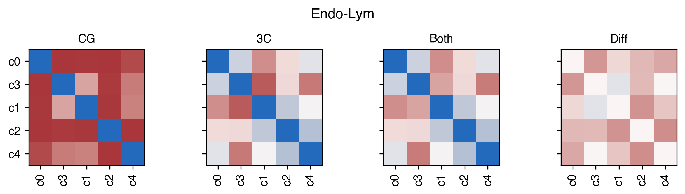
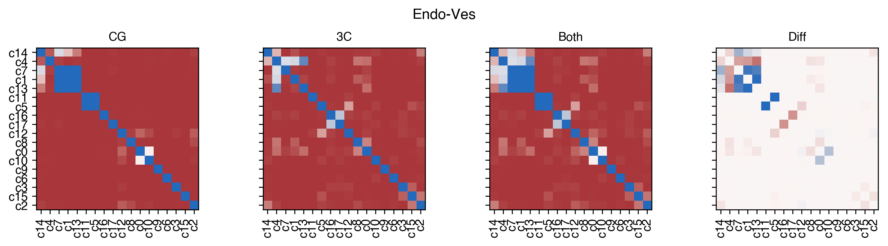
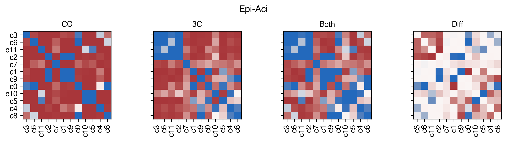
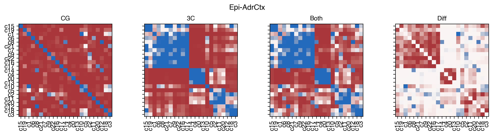
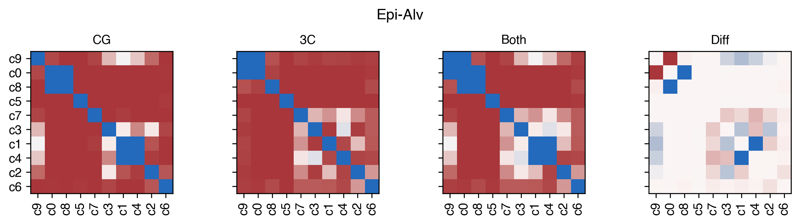
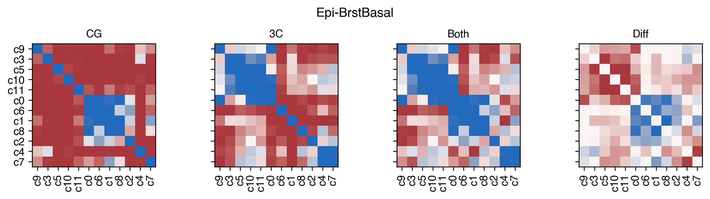
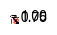
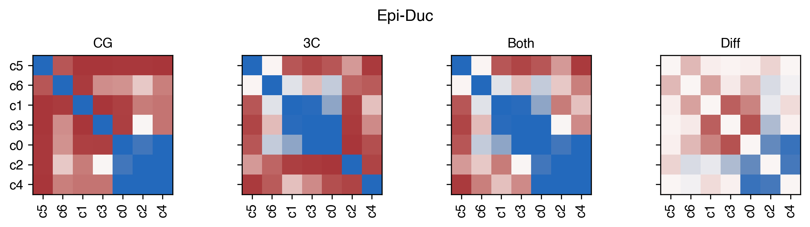
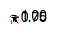
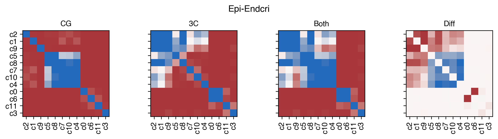
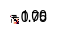
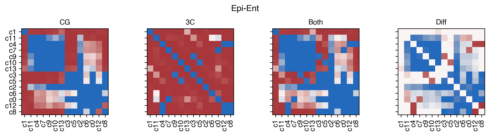
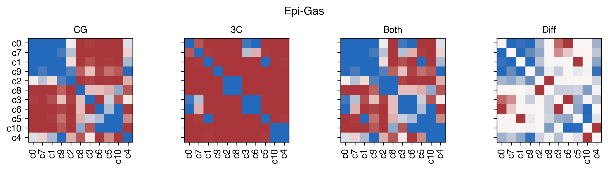
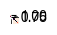
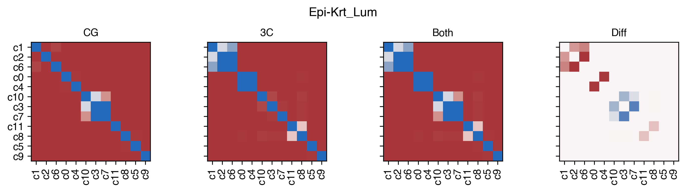
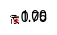
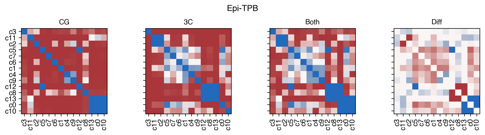
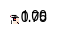
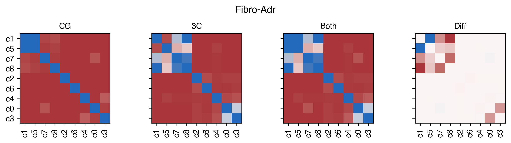
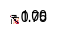
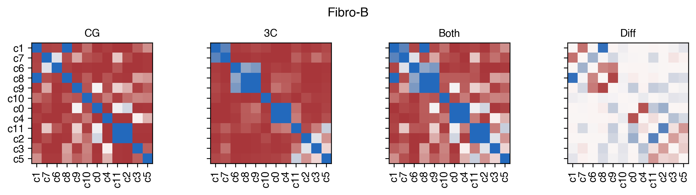
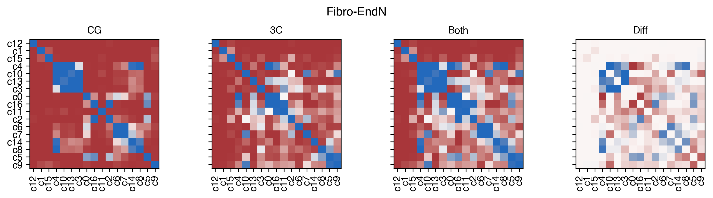
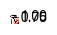
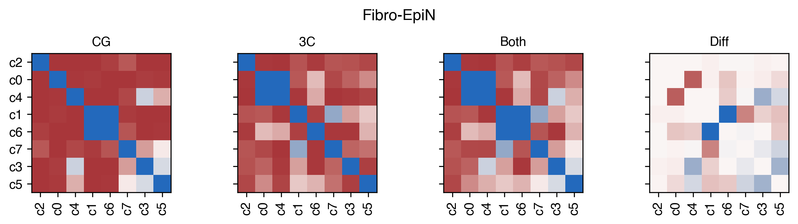
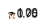
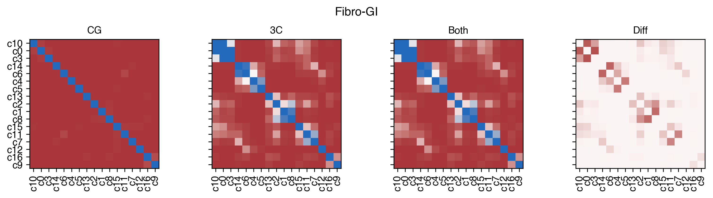
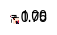
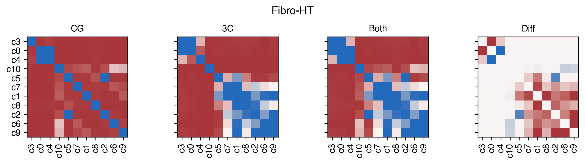
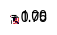
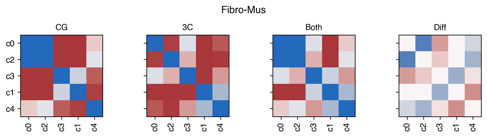
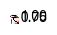
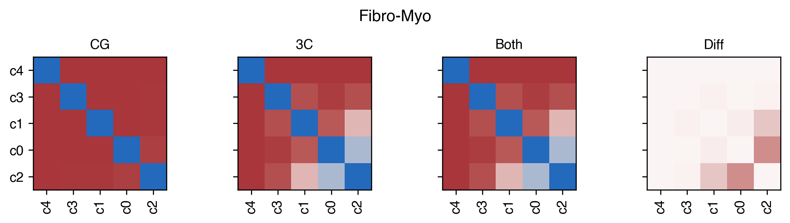
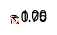
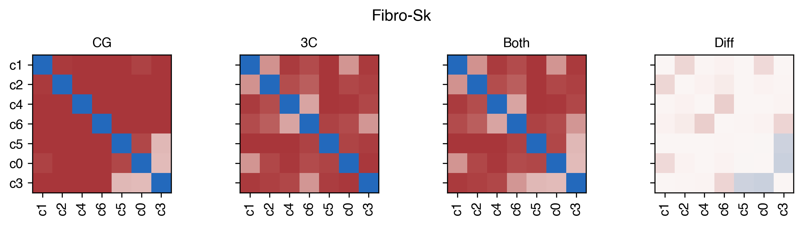
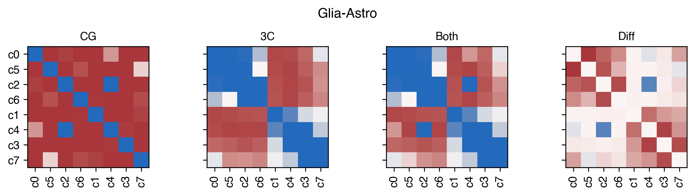
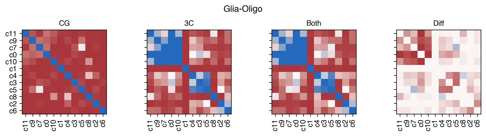
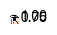
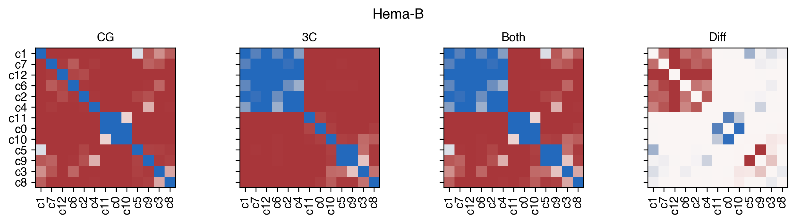
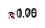
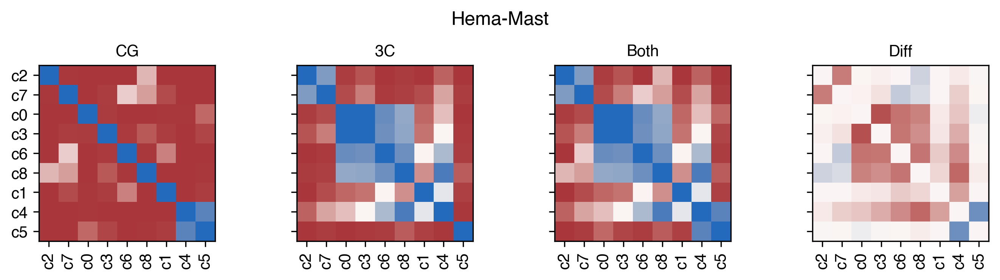
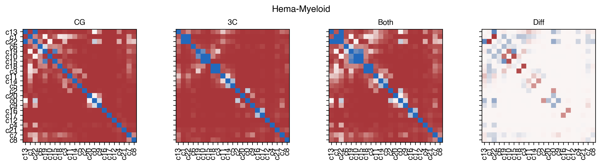
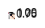
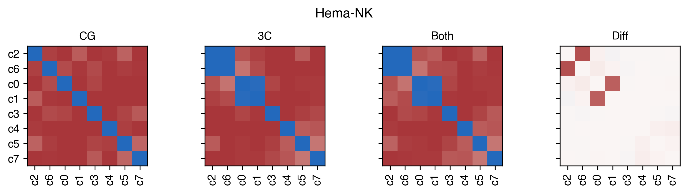
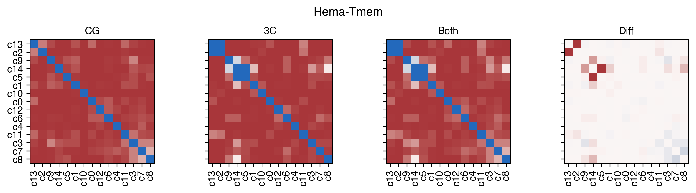
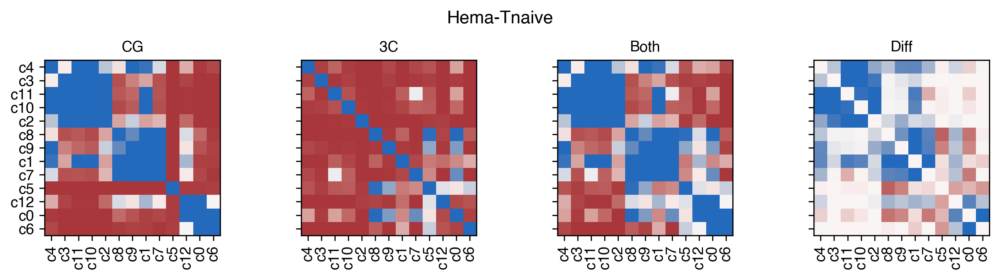
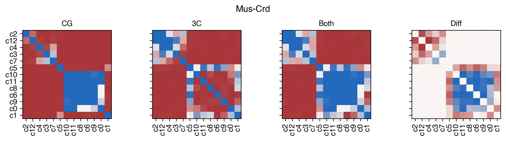
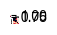
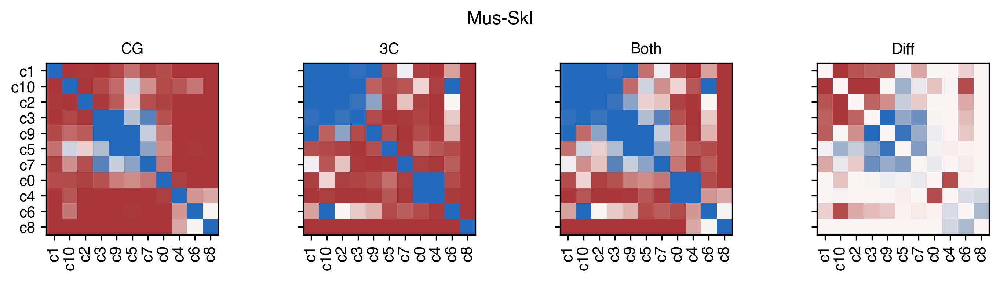
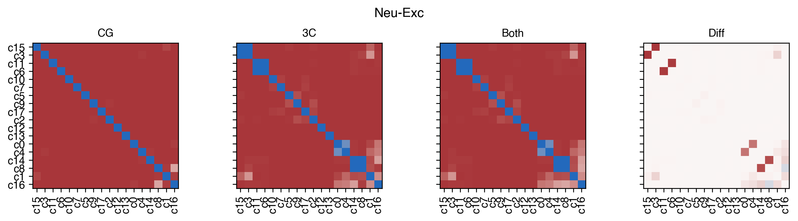
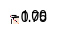
def merge_both(ct):
global indir, outdir
adata = anndata.read_h5ad(f'{indir}L2/{ct}/5kCG100k3C_embed.h5ad')
npc_cg, npc_3c = npc.loc[ct].values
data_cg = normalize(adata.obsm[f'5kCG100k3C_u{npc_cg}pc{npc_3c}'][:, :npc_cg], axis=1)
data_3c = normalize(adata.obsm[f'5kCG100k3C_u{npc_cg}pc{npc_3c}'][:, -npc_3c:], axis=1)
clf = LogisticRegression(class_weight='balanced')
skf = StratifiedKFold(n_splits=3, shuffle=True)
# label = adata.obs['leiden_init']
label = np.load(f'{outdir}{ct}_mergeany_rocpr.npy', allow_pickle=True)
label = pd.Series(label, index=adata.obs.index, name='L2_any', dtype='category')
leg = np.sort(label.unique())
while len(leg)>1:
count = label.astype(str).value_counts()
score = np.zeros((2, 2, len(leg), len(leg)))
for k,data in enumerate([data_cg, data_3c]):
for i in np.arange(len(leg)-1):
for j in np.arange(i+1, len(leg)):
selc = label.isin([leg[i], leg[j]])
if count.loc[leg[i]]<count.loc[leg[j]]:
label_dict = {leg[i]:1, leg[j]:0}
else:
label_dict = {leg[i]:0, leg[j]:1}
# selc = np.random.permutation(np.where(selc)[0])
X = data[selc]
y = label.values[selc].map(label_dict)
pred = np.zeros(len(y))
for train_index, test_index in skf.split(X, y):
X_train, X_test, y_train, y_test = X[train_index], X[test_index], y[train_index], y[test_index]
pred[test_index] = clf.fit(X_train, y_train).predict_proba(X_test)[:,1]
score[0,k,i,j] = roc_auc_score(y, pred)
score[1,k,i,j] = average_precision_score(y, pred)
score = np.min(np.min(score, axis=0), axis=0)
min_score = np.min(score[np.triu_indices(len(leg), k=1)])
if min_score>0.8:
break
else:
xx,yy = np.where(score==min_score)
xx, yy = leg[xx[0]], leg[yy[0]]
# print(f'Merge {xx} {yy}')
label[label==xx] = yy
leg = np.sort(label.unique())
count = label.astype(str).value_counts()
labelmap = count.reset_index().reset_index().set_index('L2_any')['index'].to_dict()
label_reorder = label.map(labelmap).astype(int)
label_reorder = 'c' + label_reorder.astype(str)
np.save(f'{outdir}{ct}_mergeboth_rocpr80.npy', label_reorder)
return len(leg)
def merge_mc(ct):
global indir, outdir
adata = anndata.read_h5ad(f'{indir}L2/{ct}/5kCG100k3C_embed.h5ad')
npc_cg, npc_3c = npc.loc[ct].values
data = normalize(adata.obsm[f'5kCG100k3C_u{npc_cg}pc{npc_3c}'][:, :npc_cg], axis=1)
# data_3c = normalize(adata.obsm[f'5kCG100k3C_u{npc_cg}pc{npc_3c}'][:, -npc_3c:], axis=1)
clf = LogisticRegression(class_weight='balanced')
skf = StratifiedKFold(n_splits=3, shuffle=True)
# label = adata.obs['leiden_init']
label = np.load(f'{outdir}{ct}_mergeany_rocpr.npy', allow_pickle=True)
label = pd.Series(label, index=adata.obs.index, name='L2_any', dtype='category')
leg = np.sort(label.unique())
while len(leg)>1:
count = label.astype(str).value_counts()
score = np.zeros((2, len(leg), len(leg)))
for i in np.arange(len(leg)-1):
for j in np.arange(i+1, len(leg)):
selc = label.isin([leg[i], leg[j]])
if count.loc[leg[i]]<count.loc[leg[j]]:
label_dict = {leg[i]:1, leg[j]:0}
else:
label_dict = {leg[i]:0, leg[j]:1}
# selc = np.random.permutation(np.where(selc)[0])
X = data[selc]
y = label.values[selc].map(label_dict)
pred = np.zeros(len(y))
for train_index, test_index in skf.split(X, y):
X_train, X_test, y_train, y_test = X[train_index], X[test_index], y[train_index], y[test_index]
pred[test_index] = clf.fit(X_train, y_train).predict_proba(X_test)[:,1]
score[0,i,j] = roc_auc_score(y, pred)
score[1,i,j] = average_precision_score(y, pred)
score = np.min(score, axis=0)
min_score = np.min(score[np.triu_indices(len(leg), k=1)])
if min_score>0.9:
break
else:
xx,yy = np.where(score==min_score)
xx, yy = leg[xx[0]], leg[yy[0]]
# print(f'Merge {xx} {yy}')
label[label==xx] = yy
leg = np.sort(label.unique())
count = label.astype(str).value_counts()
labelmap = count.reset_index().reset_index().set_index('L2_any')['index'].to_dict()
label_reorder = label.map(labelmap).astype(int)
label_reorder = 'c' + label_reorder.astype(str)
np.save(f'{outdir}{ct}_mergemc_rocpr.npy', label_reorder)
return len(leg)
def merge_3c(ct):
global indir, outdir
adata = anndata.read_h5ad(f'{indir}L2/{ct}/5kCG100k3C_embed.h5ad')
npc_cg, npc_3c = npc.loc[ct].values
# data_mc = normalize(adata.obsm[f'5kCG100k3C_u{npc_cg}pc{npc_3c}'][:, :npc_cg], axis=1)
data = normalize(adata.obsm[f'5kCG100k3C_u{npc_cg}pc{npc_3c}'][:, -npc_3c:], axis=1)
clf = LogisticRegression(class_weight='balanced')
skf = StratifiedKFold(n_splits=3, shuffle=True)
# label = adata.obs['leiden_init']
label = np.load(f'{outdir}{ct}_mergeany_rocpr.npy', allow_pickle=True)
label = pd.Series(label, index=adata.obs.index, name='L2_any', dtype='category')
leg = np.sort(label.unique())
while len(leg)>1:
count = label.astype(str).value_counts()
score = np.zeros((2, len(leg), len(leg)))
for i in np.arange(len(leg)-1):
for j in np.arange(i+1, len(leg)):
selc = label.isin([leg[i], leg[j]])
if count.loc[leg[i]]<count.loc[leg[j]]:
label_dict = {leg[i]:1, leg[j]:0}
else:
label_dict = {leg[i]:0, leg[j]:1}
# selc = np.random.permutation(np.where(selc)[0])
X = data[selc]
y = label.values[selc].map(label_dict)
pred = np.zeros(len(y))
for train_index, test_index in skf.split(X, y):
X_train, X_test, y_train, y_test = X[train_index], X[test_index], y[train_index], y[test_index]
pred[test_index] = clf.fit(X_train, y_train).predict_proba(X_test)[:,1]
score[0,i,j] = roc_auc_score(y, pred)
score[1,i,j] = average_precision_score(y, pred)
score = np.min(score, axis=0)
min_score = np.min(score[np.triu_indices(len(leg), k=1)])
if min_score>0.9:
break
else:
xx,yy = np.where(score==min_score)
xx, yy = leg[xx[0]], leg[yy[0]]
# print(f'Merge {xx} {yy}')
label[label==xx] = yy
leg = np.sort(label.unique())
count = label.astype(str).value_counts()
labelmap = count.reset_index().reset_index().set_index('L2_any')['index'].to_dict()
label_reorder = label.map(labelmap).astype(int)
label_reorder = 'c' + label_reorder.astype(str)
np.save(f'{outdir}{ct}_merge3c_rocpr.npy', label_reorder)
return len(leg)
from concurrent.futures import ProcessPoolExecutor, as_completed
cpu = 20
with ProcessPoolExecutor(cpu) as executor:
futures = {}
for ct in L1_list:
future = executor.submit(
merge_both,
ct=ct,
)
futures[future] = ct
result = {}
for future in as_completed(futures):
ct = futures[future]
result[ct] = future.result()
print(f'{ct} finished')
Endo-Lym finished
Fibro-Myo finished
Fibro-Sk finished
Fibro-Mus finished
Epi-Duc finished
Fibro-EpiN finished
Epi-Alv finished
Glia-Astro finished
Fibro-Adr finished
Hema-Mast finished
Hema-NK finished
Epi-Krt_Lum finished
Epi-BrstBasal finished
Epi-Gas finished
Epi-Aci finished
Epi-Endcri finished
Fibro-B finished
Fibro-HT finished
Glia-Oligo finished
SmMus_Peri finished
Neu-Schw finished
Mus-Skl finished
Epi-Ent finished
Mus-Crd finished
Hema-Tmem finished
Hema-Tnaive finished
Hema-B finished
Neu-Inh finished
Epi-TPB finished
Fibro-GI finished
Endo-Ves finished
Neu-Exc finished
Fibro-EndN finished
Epi-AdrCtx finished
Hema-Myeloid finished
# ## leiden_init vs L2any
# coord_base = 'tsne'
# result = {}
# label = []
# for ct in L1_list:
# adata = anndata.read_h5ad(f'{indir}L2/{ct}/5kCG100k3C_embed.h5ad')
# labelany = np.load(f'{outdir}{ct}_mergeany.npy', allow_pickle=True)
# n_new = len(np.unique(labelany))
# n_old = len(adata.obs['leiden_init'].unique())
# result[ct] = n_new
# label.append(pd.Series(labelany, index=adata.obs.index))
# # print(ct, n_new, n_old)
# if n_new!=n_old:
# ds = 150/np.sqrt(adata.shape[0])
# fig, axes = plt.subplots(1, 2, figsize=(8,3), dpi=300)
# fig.suptitle(f'{ct} {adata.shape[0]} {n_new} {n_old}', fontsize=15)
# for tmp,ax in zip([labelany, adata.obs['leiden_init']], axes):
# _ = categorical_scatter(data=adata.obs,
# ax=ax,
# coord_base=coord_base,
# hue=tmp,
# text_anno=tmp,
# s=ds,
# labelsize=12,
# max_points=None,
# palette='tab20',
# scatter_kws={'rasterized':True},
# # show_legend=True
# )
tissue_list = np.sort(['AG', 'B', 'EG', 'LG', 'LV', 'M1C', 'NTb', 'P', 'PBMC', 'PI',
'RAA', 'SB', 'ST', 'Sk', 'SkGcn', 'TrCo'])
tissue_color = {xx:yy for xx,yy in zip(tissue_list, sns.color_palette('tab20', len(tissue_list)))}
## L2any_roc L2any_rocpr L2both_roc, L2both_rocpr, L2both_rocpr80
# coord_base = 'tsne'
# result = {}
# label = []
# for ct in L1_list:
# adata = anndata.read_h5ad(f'{indir}L2/{ct}/5kCG100k3C_embed.h5ad')
# labelany_roc = np.load(f'{outdir}{ct}_mergeany.npy', allow_pickle=True)
# labelboth_roc = np.load(f'{outdir}{ct}_mergeboth.npy', allow_pickle=True)
# labelany = np.load(f'{outdir}{ct}_mergeany_rocpr.npy', allow_pickle=True)
# labelboth = np.load(f'{outdir}{ct}_mergeboth_rocpr.npy', allow_pickle=True)
# labelboth80 = np.load(f'{outdir}{ct}_mergeboth_rocpr80.npy', allow_pickle=True)
# # print(ct, n_new, n_old)
# ds = 150/np.sqrt(adata.shape[0])
# fig, axes = plt.subplots(1, 5, figsize=(20,3), dpi=300)
# fig.suptitle(f'{ct} {adata.shape[0]} '
# f'{len(np.unique(labelany_roc))} '
# f'{len(np.unique(labelany))} '
# f'{len(np.unique(labelboth_roc))} '
# f'{len(np.unique(labelboth))} '
# f'{len(np.unique(labelboth80))}', fontsize=15)
# for tmp,ax in zip([labelany_roc, labelany, labelboth_roc, labelboth, labelboth80], axes):
# _ = categorical_scatter(data=adata.obs,
# ax=ax,
# coord_base=coord_base,
# hue=tmp,
# text_anno=tmp,
# s=ds,
# labelsize=12,
# max_points=None,
# palette='tab20',
# scatter_kws={'rasterized':True},
# # show_legend=True
# )
# # ax = axes[4]
# # _ = categorical_scatter(data=adata.obs,
# # ax=ax,
# # coord_base=coord_base,
# # hue='Tissue',
# # # text_anno=xx,
# # s=ds,
# # labelsize=8,
# # max_points=None,
# # palette=tissue_color,
# # scatter_kws={'rasterized':True},
# # show_legend=True
# # )
coord_base = 'tsne'
for ct in L1_list:
labelany = np.load(f'{outdir}{ct}_mergeany.npy', allow_pickle=True)
adata_mc = anndata.read_h5ad(f'{indir}L2/{ct}/5kCG_embed.h5ad')
adata_3c = anndata.read_h5ad(f'{indir}L2/{ct}/100k3C_embed.h5ad')
adata_3c = adata_3c[adata_mc.obs.index].copy()
adata = anndata.read_h5ad(f'{indir}L2/{ct}/5kCG100k3C_embed.h5ad')
npc_cg, npc_3c = npc.loc[ct].values
# npc_cg = [int(xx.split('_')[1][1:]) for xx in adata_mc.obsm.keys() if '_seuratL2_tsne' in xx][0]
# npc_3c = [int(xx.split('_')[1][1:]) for xx in adata_3c.obsm.keys() if '100k3C_u' in xx][0]
# npc_3c = [int(xx.split('_')[1][2:]) for xx in adata_3c.obsm.keys() if '_seuratL2_tsne' in xx][0]
print(npc_cg, npc_3c)
# labelany_roc = np.load(f'{outdir}{ct}_mergeany.npy', allow_pickle=True)
# labelboth = np.load(f'{outdir}{ct}_mergeboth.npy', allow_pickle=True)
labelany = np.load(f'{outdir}{ct}_mergeany_rocpr.npy', allow_pickle=True)
labelboth = np.load(f'{outdir}{ct}_mergeboth_rocpr80.npy', allow_pickle=True)
ds = 150/np.sqrt(adata.shape[0])
fig, axes = plt.subplots(6, 3, figsize=(12,18), dpi=300)
fig.suptitle(f'{ct} {len(np.unique(labelany))} {len(np.unique(labelboth))}', fontsize=15)
for i,xx in enumerate([adata, adata_mc, adata_3c]):
tmp = xx.obs.copy()
# tmp['ClusterTissue'] = adata.obs['ClusterTissue'].copy()
for j,yy in enumerate([labelany, labelboth]):
# dump_embedding(xx, coord_base)
# tmp['leiden_init'] = labelany.copy()
ax = axes[j,i]
_ = categorical_scatter(data=tmp,
ax=ax,
coord_base=coord_base,
hue=yy,
text_anno=yy,
s=ds,
labelsize=12,
max_points=None,
palette='tab20',
scatter_kws={'rasterized':True},
# legend_kws={'ncol':1},
# show_legend=True
)
ax = axes[2,i]
_ = categorical_scatter(data=tmp,
ax=ax,
coord_base=coord_base,
hue=adata.obs['Tissue'],
# text_anno=adata.obs['Tissue'],
s=ds,
labelsize=12,
max_points=None,
palette=tissue_color,
scatter_kws={'rasterized':True},
show_legend=True,
legend_kws={'fontsize':6},
)
ax = axes[3,i]
_ = categorical_scatter(data=tmp,
ax=ax,
coord_base=coord_base,
hue=adata.obs['ClusterTissue'],
# text_anno=adata.obs['ClusterTissue'],
s=ds,
labelsize=12,
max_points=None,
palette='tab20',
scatter_kws={'rasterized':True},
show_legend=True,
legend_kws={'fontsize':6},
)
ax = axes[4,i]
_ = continuous_scatter(data=tmp,
ax=ax,
coord_base=coord_base,
hue=adata.obs['mCGFrac'],
s=ds,
labelsize=12,
max_points=None,
scatter_kws={'rasterized':True},
)
ax = axes[5,i]
_ = continuous_scatter(data=tmp,
ax=ax,
coord_base=coord_base,
hue=meta['Short/Long'],
s=ds,
labelsize=12,
max_points=None,
scatter_kws={'rasterized':True},
)
fig.tight_layout()
fig.savefig(f'{outdir}plot/{ct}.pdf', transparent=True)
9 13
28 11
5 8
11 5
20 8
12 4
4 7
15 10
5 10
5 9
10 10
14 8
10 16
10 11
20 6
17 15
24 7
16 7
11 12
8 6
26 20
10 5
10 8
6 8
13 14
15 15
15 12
15 10
5 6
5 6
7 10
18 9
29 11
9 10
20 11
coord_base = 'tsne'
labelany, labelboth, labelmc, label3c = [], [], [], []
for ct in L1_list:
adata = anndata.read_h5ad(f'{indir}L2/{ct}/5kCG100k3C_embed.h5ad')
tmp = np.load(f'{outdir}{ct}_mergeany_rocpr.npy', allow_pickle=True)
labelany.append(pd.Series(tmp, index=adata.obs.index))
tmp = np.load(f'{outdir}{ct}_mergeboth_rocpr80.npy', allow_pickle=True)
labelboth.append(pd.Series(tmp, index=adata.obs.index))
tmp = np.load(f'{outdir}{ct}_mergemc_rocpr.npy', allow_pickle=True)
labelmc.append(pd.Series(tmp, index=adata.obs.index))
tmp = np.load(f'{outdir}{ct}_merge3c_rocpr.npy', allow_pickle=True)
label3c.append(pd.Series(tmp, index=adata.obs.index))
labelany = pd.concat(labelany)
labelboth = pd.concat(labelboth)
labelmc = pd.concat(labelmc)
label3c = pd.concat(label3c)
adata = anndata.read_h5ad(f'{indir}5kCG100k3C_summary.h5ad')
adata
AnnData object with n_obs × n_vars = 86689 × 0
obs: 'FinalmCReads', 'mCHFrac', 'mCGFrac', 'CisLongContact', 'Cis/Trans', 'Donor', 'Tissue', 'celltype', 'ClusterTissue', 'tsne_0', 'tsne_1', 'leiden_cons', 'leiden_cv', 'leiden_init', 'batch', 'L1_annot', 'L1', 'L2', 'L2_any', 'L2_both', 'L2_mc', 'L2_3c', 'tissue_annot', 'group', 'cluster', 'Short/Long'
obsm: '100k3C_pc50_seuratL2_tsne', '5kCG100k3C_u50pc50_tsne', '5kCG_u50_seuratL2_tsne', 'X_tsne'
adata.obs['L2_any'] = labelany.copy()
adata.obs['L2_both'] = labelboth.copy()
adata.obs['L2_mc'] = labelmc.copy()
adata.obs['L2_3c'] = label3c.copy()
(adata.obs['L1'].astype(str) + '-' + adata.obs['L2_any'].astype(str)).value_counts()
c5-c0 1399
c1-c0 1210
c1-c1 1142
c4-c0 1126
c1-c2 764
...
c14-c11 40
c2-c13 37
c10-c17 35
c12-c11 34
c21-c8 31
Name: count, Length: 420, dtype: int64
(adata.obs['L1'].astype(str) + '-' + adata.obs['L2_both'].astype(str)).value_counts()
c2-c0 5228
c4-c0 4601
c0-c0 2871
c8-c0 2855
c7-c0 2734
...
c18-c6 51
c34-c3 49
c6-c9 45
c12-c9 43
c10-c13 35
Name: count, Length: 162, dtype: int64
(adata.obs['L1'].astype(str) + '-' + adata.obs['L2_mc'].astype(str)).value_counts()
c0-c0 4671
c4-c0 3177
c2-c0 2884
c8-c0 2855
c0-c1 1600
...
c29-c7 42
c14-c8 40
c10-c16 35
c12-c10 34
c21-c6 31
Name: count, Length: 250, dtype: int64
(adata.obs['L1'].astype(str) + '-' + adata.obs['L2_3c'].astype(str)).value_counts()
c2-c0 4753
c4-c0 2160
c5-c0 1925
c5-c1 1912
c14-c0 1705
...
c21-c5 55
c34-c3 49
c20-c4 47
c6-c5 45
c10-c12 35
Name: count, Length: 177, dtype: int64
# adata.obs['L2'] = label.copy()
adata.write_h5ad(f'{indir}5kCG100k3C_summary.h5ad')
Merge cell to L2donor#
adata = anndata.read_h5ad(f'{indir}5kCG100k3C_summary.h5ad')
allc_table = pd.read_csv(f'{ENTEX_ROOT}/allclist.tsv', sep='\t', index_col=0, header=None)
allc_table[1] = allc_table[1].str.replace('.allc.tsv.gz', '.cov2.allc.tsv.gz')
allc_table
| 1 | |
|---|---|
| 0 | |
| M1C_3C_001_Plate1-1-F3-A1 | /gale/netapp/entex/ENTEx/Pool_BVBW_M1C/output_... |
| M1C_3C_001_Plate1-1-F3-A2 | /gale/netapp/entex/ENTEx/Pool_BVBW_M1C/output_... |
| M1C_3C_001_Plate1-1-F3-B13 | /gale/netapp/entex/ENTEx/Pool_BVBW_M1C/output_... |
| M1C_3C_001_Plate1-1-F3-B14 | /gale/netapp/entex/ENTEx/Pool_BVBW_M1C/output_... |
| M1C_3C_001_Plate1-1-F3-B1 | /gale/netapp/entex/ENTEx/Pool_BVBW_M1C/output_... |
| ... | ... |
| Sk_IOBHT_AR_Plate7-6-I24-O24 | /gale/netapp/entex/ENTEx/Pool_EFEG_AG_LG_P_PI_... |
| Sk_IOBHT_AR_Plate7-6-I24-P11 | /gale/netapp/entex/ENTEx/Pool_EFEG_AG_LG_P_PI_... |
| Sk_IOBHT_AR_Plate7-6-I24-P12 | /gale/netapp/entex/ENTEx/Pool_EFEG_AG_LG_P_PI_... |
| Sk_IOBHT_AR_Plate7-6-I24-P23 | /gale/netapp/entex/ENTEx/Pool_EFEG_AG_LG_P_PI_... |
| Sk_IOBHT_AR_Plate7-6-I24-P24 | /gale/netapp/entex/ENTEx/Pool_EFEG_AG_LG_P_PI_... |
93550 rows × 1 columns
# adata.obs['allcpath'] = '/gale/netapp/entex/ENTEx/allc_CGN/' + adata.obs.index + '.CGN-Both.allc.tsv.gz'
adata.obs['allcpath'] = allc_table.loc[adata.obs.index, 1]
adata.obs['coolpath'] = 'gs://ecker-zhoujt-analysis/ENTEx/tissue/' + adata.obs['Tissue'].astype(str) + '/impute/10K/' + adata.obs.index + '.cool'
adata.obs['cluster'] = adata.obs['L1'].astype(str) + '-' + adata.obs['L2_any'].astype(str)
adata.obs['cluster_tissue'] = adata.obs['cluster'].astype(str) + '-' + adata.obs['Tissue'].astype(str)
adata.obs['group'] = adata.obs['cluster_tissue'].astype(str) + '-' + adata.obs['Donor'].astype(str)
count = adata.obs['group'].value_counts().to_dict()
merge_group = {}
for xx in count:
if count[xx]<30:
merge_group[xx] = '-'.join(xx.split('-')[:3]) + '-Other'
else:
merge_group[xx] = xx
adata.obs['group'] = adata.obs['group'].map(merge_group)
count = adata.obs['group'].value_counts()
(count>=30).sum()
779
count
group
c5-c0-SkGcn-PT-1LVAN 772
c1-c0-PBMC-4809 771
c5-c0-SkGcn-PT-1K2DA 627
c4-c0-ST-PT-1LGRB 593
c4-c0-ST-PT-1LVAN 533
...
c12-c4-B-Other 1
c1-c11-ST-Other 1
c1-c11-LG-Other 1
c1-c6-PBMC-Other 1
c7-c5-AG-Other 1
Name: count, Length: 1638, dtype: int64
adata.obs['cluster'].value_counts()
cluster
c5-c0 1399
c1-c0 1210
c1-c1 1142
c4-c0 1126
c1-c2 764
...
c14-c11 40
c2-c13 37
c10-c17 35
c12-c11 34
c21-c8 31
Name: count, Length: 420, dtype: int64
adata.obs.astype(str).sort_values(by=['L1', 'L2_any'])[['allcpath', 'cluster']].to_csv(f'{indir}allclist_cluster.csv', index=False, header=False)
adata.obs.astype(str).sort_values(by=['L1', 'L2_any'])[['coolpath', 'cluster']].to_csv(f'{indir}coollist_cluster.csv', index=True, header=False)
adata.obs.astype(str).sort_values(by=['L1', 'L2_any'])[['allcpath', 'group']].to_csv(f'{indir}allclist_group.csv', index=False, header=False)
adata.obs.astype(str).sort_values(by=['L1', 'L2_any'])[['coolpath', 'group']].to_csv(f'{indir}coollist_group.csv', index=True, header=False)
group_meta = adata.obs[['group', 'Tissue', 'L2_any', 'L2_mc', 'L2_3c', 'L2_both', 'L1', 'L1_annot']].value_counts().reset_index().set_index('group')
for xx in ['L2_any', 'L2_mc', 'L2_3c', 'L2_both']:
group_meta[xx] = group_meta['L1'].astype(str) + '-' + group_meta[xx].astype(str)
group_meta.to_csv(f'{indir}group_meta.tsv', sep='\t', header=True, index=True)
cluster_meta = adata.obs[['L1', 'L2_any', 'L1_annot']].drop_duplicates()
cluster_meta.columns = ['L1', 'L2', 'L1_annot']
cluster_meta.index = cluster_meta['L1'].astype(str) + '-' + cluster_meta['L2'].astype(str)
cluster_meta.sort_values(by=['L1_annot', 'L2']).to_csv(f'{indir}cluster_meta.tsv', sep='\t', header=True, index=True)
Merge L2any to L2both#
indir = f'{ENTEX_ROOT}/'
allc_table = pd.read_csv(f'{indir}merged_allc/allclist_L2any.txt', header=None, index_col=None, names=['allcpath'])
allc_table.index = allc_table['allcpath'].str.split('/').str[-2]
allc_table.index.name = 'L2_any'
cool_table = pd.read_csv(f'{indir}merged_cool_impute/coollist_L2any.txt', header=None, index_col=None, names=['coolpath'])
cool_table.index = cool_table['coolpath'].str.split('/').str[-2]
cool_table.index.name = 'L2_any'
tmp = adata.obs[['L2_any', 'L2_both']]
tmp['L2_any'] = adata.obs['L1'].astype(str) + '-' + tmp['L2_any'].astype(str)
tmp['L2_both'] = adata.obs['L1'].astype(str) + '-' + tmp['L2_both'].astype(str)
tmp = tmp[['L2_any', 'L2_both']].drop_duplicates().set_index('L2_any')
tmp['allcpath'] = tmp.index.map(allc_table['allcpath'])
tmp['coolpath'] = tmp.index.map(cool_table['coolpath'])
tmp[['allcpath', 'L2_both']].sort_values('L2_both').to_csv(f'{indir}merged_allc/allclist_L2both.csv', index=False, header=False)
tmp[['coolpath', 'L2_both']].sort_values('L2_both').to_csv(f'{indir}merged_cool_impute/coollist_L2both.csv', index=True, header=False)
np.sum([result[xx] for xx in result])
128
pd.Series(result).sort_index()
Endo-Lym 1
Endo-Ves 9
Epi-Aci 1
Epi-AdrCtx 2
Epi-Alv 3
Epi-BrstBasal 1
Epi-Duc 1
Epi-Endcri 4
Epi-Ent 2
Epi-Gas 1
Epi-Krt_Lum 6
Epi-TPB 1
Fibro-Adr 5
Fibro-B 2
Fibro-EndN 3
Fibro-EpiN 3
Fibro-GI 6
Fibro-HT 2
Fibro-Mus 1
Fibro-Myo 3
Fibro-Sk 5
Glia-Astro 1
Glia-Oligo 2
Hema-B 2
Hema-Mast 1
Hema-Myeloid 5
Hema-NK 6
Hema-Tmem 12
Hema-Tnaive 1
Mus-Crd 2
Mus-Skl 2
Neu-Exc 13
Neu-Inh 9
Neu-Schw 4
SmMus_Peri 6
dtype: int64
np.sum([result[xx] for xx in result])
420
pd.Series(result).sort_index()
Endo-Lym 5
Endo-Ves 18
Epi-Aci 12
Epi-AdrCtx 23
Epi-Alv 10
Epi-BrstBasal 12
Epi-Duc 7
Epi-Endcri 12
Epi-Ent 14
Epi-Gas 11
Epi-Krt_Lum 12
Epi-TPB 14
Fibro-Adr 9
Fibro-B 12
Fibro-EndN 17
Fibro-EpiN 8
Fibro-GI 17
Fibro-HT 11
Fibro-Mus 5
Fibro-Myo 5
Fibro-Sk 7
Glia-Astro 8
Glia-Oligo 12
Hema-B 13
Hema-Mast 9
Hema-Myeloid 23
Hema-NK 8
Hema-Tmem 15
Hema-Tnaive 13
Mus-Crd 13
Mus-Skl 11
Neu-Exc 18
Neu-Inh 15
Neu-Schw 9
SmMus_Peri 12
dtype: int64
label = []
for ct in ['Epi-Ent', 'Epi-Gas', 'Epi-TPB']:
adata_tmp = anndata.read_h5ad(f'{indir}L2_hiconly/{ct}/100k3C_embed.h5ad')
label_tmp = np.load(f'{indir}L2_hiconly/{ct}/mergehic_rocpr.npy', allow_pickle=True)
label.append(pd.Series(label_tmp, index=adata_tmp.obs.index))
label = pd.concat(label)
label = pd.DataFrame(label, columns=['L2_any'])
label = pd.concat([label, adata.obs.loc[label.index, ['L1', 'L1_annot', 'Donor', 'allcpath', 'coolpath']]], axis=1)
label
| L2_any | L1 | L1_annot | Donor | allcpath | coolpath | |
|---|---|---|---|---|---|---|
| cell | ||||||
| TrCo_A9HOW_Plate1-1-H22-A14 | c2 | c8 | Epi Ent | PT-1LGRB | /gale/netapp/entex/ENTEx/Pool_BXBY_TrCo/output... | gs://ecker-zhoujt-analysis/ENTEx/tissue/TrCo/i... |
| TrCo_A9HOW_Plate1-1-H22-B14 | c9 | c8 | Epi Ent | PT-1LGRB | /gale/netapp/entex/ENTEx/Pool_BXBY_TrCo/output... | gs://ecker-zhoujt-analysis/ENTEx/tissue/TrCo/i... |
| TrCo_A9HOW_Plate1-1-H22-B2 | c6 | c8 | Epi Ent | PT-1LGRB | /gale/netapp/entex/ENTEx/Pool_BXBY_TrCo/output... | gs://ecker-zhoujt-analysis/ENTEx/tissue/TrCo/i... |
| TrCo_A9HOW_Plate1-1-H22-C1 | c12 | c8 | Epi Ent | PT-1LGRB | /gale/netapp/entex/ENTEx/Pool_BXBY_TrCo/output... | gs://ecker-zhoujt-analysis/ENTEx/tissue/TrCo/i... |
| TrCo_A9HOW_Plate1-1-H22-D1 | c13 | c8 | Epi Ent | PT-1LGRB | /gale/netapp/entex/ENTEx/Pool_BXBY_TrCo/output... | gs://ecker-zhoujt-analysis/ENTEx/tissue/TrCo/i... |
| ... | ... | ... | ... | ... | ... | ... |
| P_9213_AR_Plate8-6-M9-O24 | c11 | c2 | Epi TPB | 9213 | /gale/netapp/entex/ENTEx/Pool_EFEG_AG_LG_P_PI_... | gs://ecker-zhoujt-analysis/ENTEx/tissue/P/impu... |
| P_9213_AR_Plate8-6-M9-P11 | c29 | c2 | Epi TPB | 9213 | /gale/netapp/entex/ENTEx/Pool_EFEG_AG_LG_P_PI_... | gs://ecker-zhoujt-analysis/ENTEx/tissue/P/impu... |
| P_9213_AR_Plate8-6-M9-P12 | c3 | c2 | Epi TPB | 9213 | /gale/netapp/entex/ENTEx/Pool_EFEG_AG_LG_P_PI_... | gs://ecker-zhoujt-analysis/ENTEx/tissue/P/impu... |
| P_9213_AR_Plate8-6-M9-P23 | c12 | c2 | Epi TPB | 9213 | /gale/netapp/entex/ENTEx/Pool_EFEG_AG_LG_P_PI_... | gs://ecker-zhoujt-analysis/ENTEx/tissue/P/impu... |
| P_9213_AR_Plate8-6-M9-P24 | c15 | c2 | Epi TPB | 9213 | /gale/netapp/entex/ENTEx/Pool_EFEG_AG_LG_P_PI_... | gs://ecker-zhoujt-analysis/ENTEx/tissue/P/impu... |
13163 rows × 6 columns
label['group'] = label['L1'].astype(str) + '-' + label['L2_any'].astype(str) + '-' + label['Donor'].astype(str)
label['cluster'] = label['L1'].astype(str) + '-' + label['L2_any'].astype(str)
label.sort_values(by=['L1', 'L2_any'])[['allcpath', 'group']].to_csv(f'{indir}allclist_group_hic.csv', index=False, header=False)
label.sort_values(by=['L1', 'L2_any'])[['coolpath', 'group']].to_csv(f'{indir}coollist_group_hic.csv', index=True, header=False)